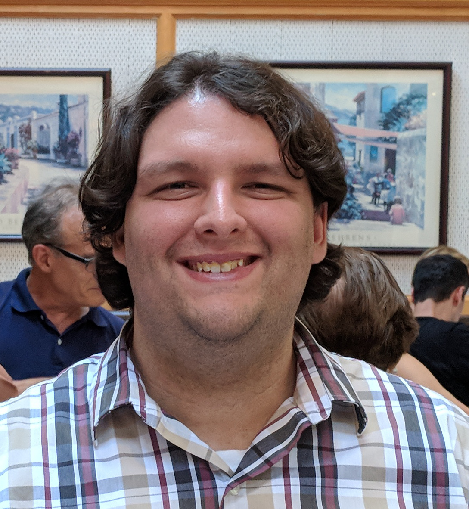

-
Principal Investigator
-
David W. Snoke
Dr. Snoke approaches "clean" semiconductor systems as test beds for studying basic principles of low-dimensional physics, quantum phase transitions such as Bose-Einstein condensation, nonequilibrium dynamics, dephasing, and control of quantum coherence. For a complete list of his publications click here.
-
Postdoctoral Associate
-

Zheng Sun
Zheng joined our group in November 2017 after finishing his PhD in Dr. Menon's group at CUNY, NY. He is leading our group's project on two dimensional materials for studying strongly coupled light-matter physics.
-
Graduate Students
-
David M. Myers
David's research focus is on studying the interaction of an electrical current with a polariton condensate trapped in a narrow channel. He also studies the dynamics of polariton condensate in a potential landscape.
-

Jonathan Beaumariage
Jony has worked towards developing optical characterization techniques for high Q microcavities and has overhauled our lab's automation capabilities. He is also investigating strain effects for tuning strong light-matter coupling in two dimensional materials.
-
Shouvik Mukherjee
Shouvik is investigating the many-body effects associated with the flow of exciton-polariton condesnsate in a narrow channel. He is exploring connections to optical spin hall physics and complex dynamics in a simply-connected closed channel.
-

Qi Yao
Qi is the newest member of our group. He started working in our lab in Summer 2018. He is learning device fabrication and optical measurement techniques.
-
Undergraduate Student
-
Adam Grusky
Together with Jony, Adam worked out several technical challenges for automating our experiments. He is also interested in making optical ring traps using a spatial light modulator for studying equilibrium polariton condensates.